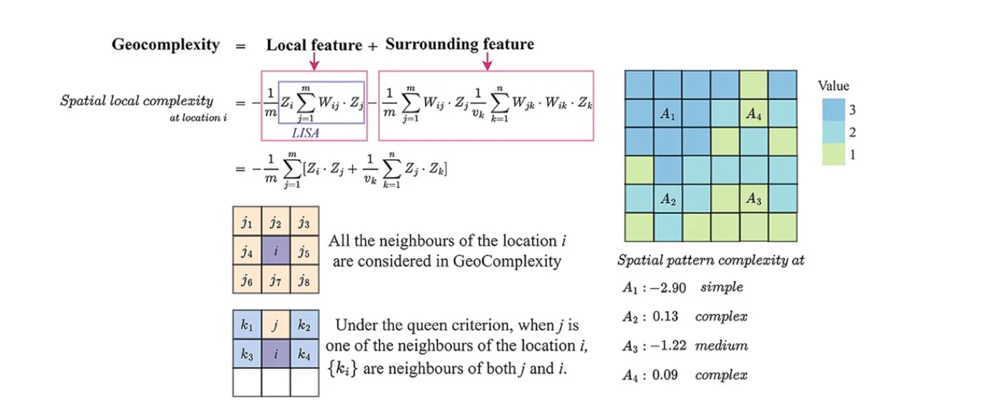
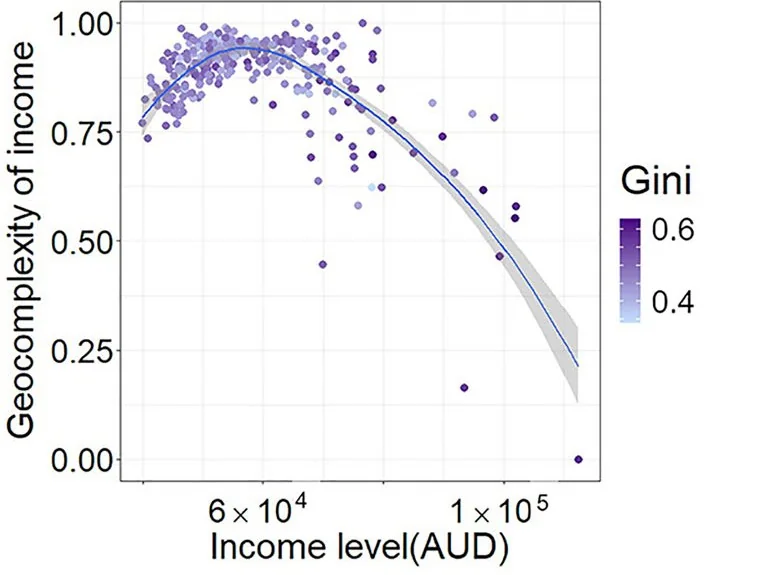
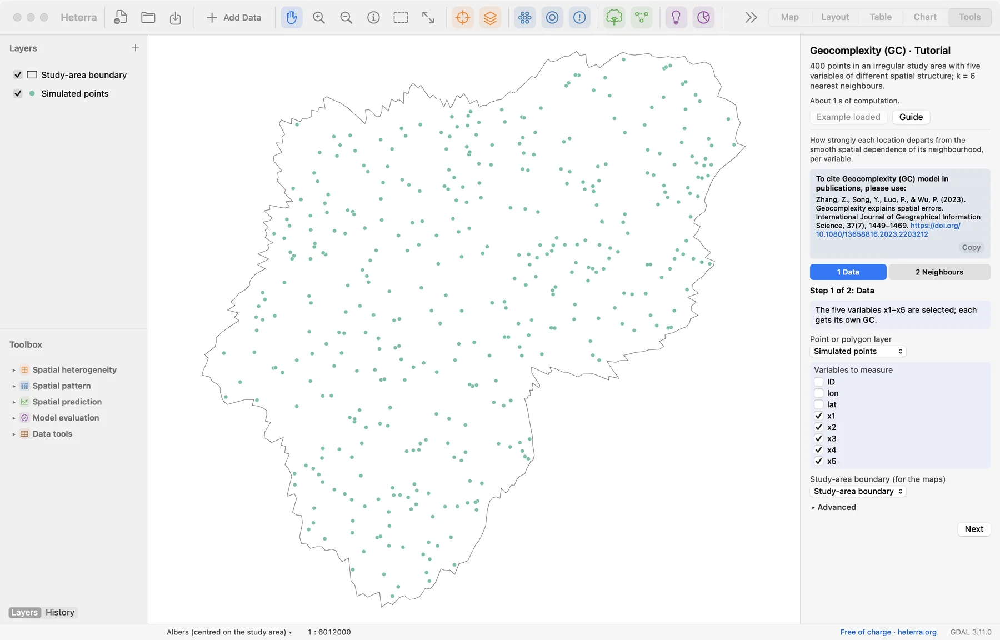
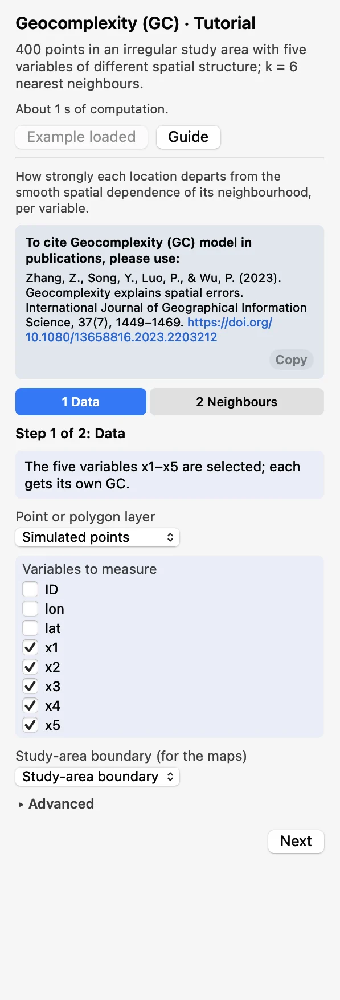
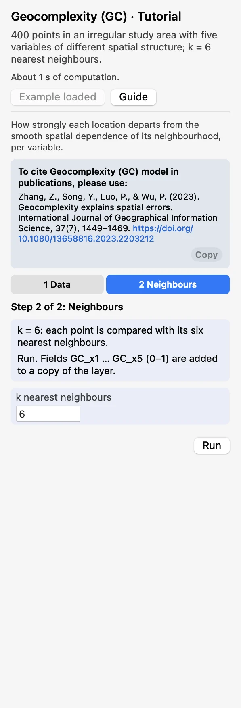
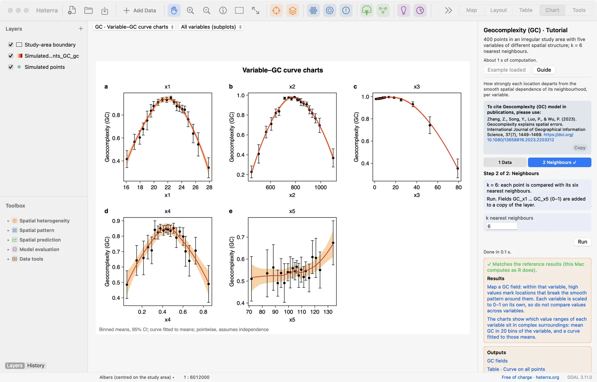
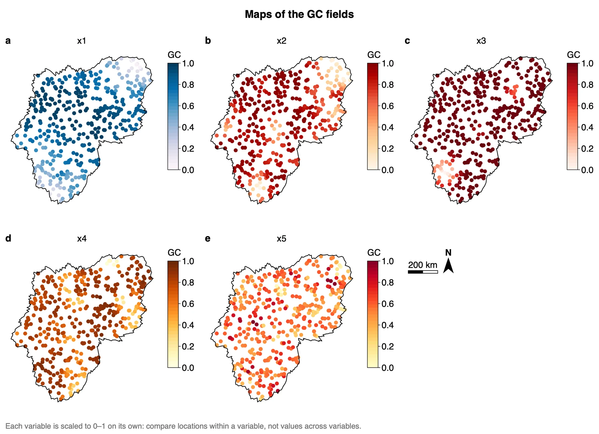
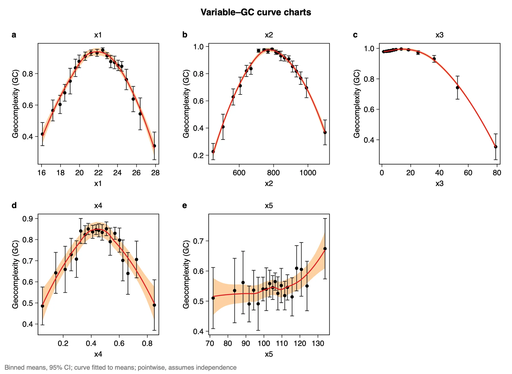

Part 3 · Spatial pattern · Chapter 3
GC
Geocomplexity
The question
Where does my variable depart from the smooth pattern of its surroundings, and at which values of the variable does that happen?You need
One point or polygon layer, or a CSV with longitude and latitude, with one or more numeric variables. 30 points or more are recommended.You get
A field GC between 0 and 1 for each variable, maps of these fields, and a chart per variable of the mean GC along the variable's values.1The method
The idea
Spatial data are usually dependent: a location resembles its neighbours. Geocomplexity measures, for one variable, how strongly each location departs from that smooth spatial dependence. Where the surroundings of a location follow the usual pattern, GC is low; where they break it, GC is high. The measure is from Zhang, Song, Luo and Wu (2023), "Geocomplexity explains spatial errors".
For each variable on its own, the computation has three parts:
| Part | What is done |
|---|---|
| Standardise | The variable is standardised, so its unit does not matter. |
| Local decomposition | The local Moran measure is decomposed on binary weights of the k nearest neighbours of each location (great-circle distances on WGS84). |
| Rescale | The result is min–max normalised to 0–1. |
GC lies between 0 and 1 for every variable. The location with the least complex surroundings gets 0, the one with the most complex surroundings gets 1. The scale is relative to that variable.

When to use it
- You want to map where a variable is locally irregular, for example before modelling it or to explain where a model's errors are large.
- You want to know which value ranges of a variable lie in complex surroundings.
- You have several variables and want the same description for each of them.
Where it has been used
| Field | Response y | Spatial unit | Study |
|---|---|---|---|
| Economic inequality | Gini coefficient; the GC of the explanatory variables explains where models of it have large errors | Region (333 SA3 regions of Australia) | Zhang et al. (2023) |
| Urbanization | Composite urbanization index; the GC of each variable is an extra explanatory variable | County | Sun et al. (2026) |
Any point or polygon layer with numeric variables fits. GC itself needs no response; the steps of these studies after the GC fields, such as explaining model errors, are outside Heterra.

Keep in mindEach variable is scaled to 0–1 on its own. Compare locations within one variable, not GC values across variables: in the example, pure noise has the lowest median GC of the five variables.
2In Heterra
2.1 Prepare your data
One point layer, or a CSV with longitude and latitude, one row per location (Part 1 shows how to add data). A polygon layer also works: each polygon is measured at a point on its surface, with the same k nearest neighbours. Coordinates are used as WGS84 longitude and latitude; a layer in another coordinate system is converted by Heterra. Since version 1.6.0 a table without geometry also works (for example a GeoPackage table): two fields, Longitude (WGS84 degrees) and Latitude (WGS84 degrees), then appear in step 1 and must be chosen. Their values are used as they are.
| Field | Type | In the example |
|---|---|---|
| Variables to measure | Numbers, one or more | x1 smooth gradient, x2 autocorrelated field, x3 local hotspots, x4 field plus noise, x5 pure noise |
| Boundary (optional) | A polygon layer | gc_boundary: the outline drawn on the maps in the charts. All points stay, and it changes no result. |
The example has 400 simulated points in an irregular study area. The five variables were simulated with different spatial structures, so the numbers illustrate the tool and do not describe a real study.
2.2 Run the example, step by step
Open the tool from the Toolbox (Spatial pattern → GC), click Tutorial, then Load Example. The points and the boundary appear on the map, and the panel on the right is filled in for you.

The panel has two steps. Next moves on; Run appears at the last step, because only that step computes.

DataChoose the layer and tick the Variables to measure:x1tox5. Each is computed on its own. The boundary is optional.
NeighboursKeep k nearest neighbours at 6: each point is compared with its six nearest neighbours. Click Run.
The run takes well under a second. The Chart page opens with the variable–GC curve charts, and the panel lists every result under Outputs: the GC fields, then the tables, then the figures. A green line says that the results match the reference results computed with R. The fields GC_x1 to GC_x5 are added to a copy of the layer, which appears in the layer list.

2.3 With your own data
- Add your layer (Add Data), open GC from the Toolbox and tick the variables in step 1.
- Start with k = 6, the default of the R package geocomplexity for points. A larger k gives smoother neighbourhoods; try 4 to 12 for very dense or sparse points.
- Without a coordinate system on the layer, set Map units under Advanced so that the maps get a scale bar and a north arrow. It changes only the charts.
- Rows with a missing coordinate or a missing value in a selected variable are left out and get no GC; the log says how many.
- A constant variable has no geocomplexity and is rejected. With fewer than 30 points you get a warning.
- k must be smaller than the number of points.
- With a polygon layer the figure of the maps draws the polygons, coloured by GC. Above 100,000 points the figure of the maps is left out; the fields stay in the output layer and can be mapped there.
- Column names and file names are best written with English letters, digits and underscores.
3Reading the results
Read the results in this order: the maps first (where is the variable complex?), then the curve charts (at which values?), and the tables when you need the numbers.
3.1 Maps of the GC fields

What it shows. The field GC_<variable> at every point: light for low GC, dark for high GC. Since version 1.6.0 each variable has a sequential palette of its own and its own colour bar, to make clear that the maps are not on a common scale. The palettes are chosen from the names of the variables, so the same variables get the same colours in every run. A regular grid is drawn as tiles, a polygon layer as polygons, other data as points. The same fields are in the output layer, so you can also style them on the Map page.
How to read it. Look for where the light and the dark points lie within one map. For x1, the smooth gradient, GC is low at the two ends of the gradient, in the north-east and the south-west of the area, and high almost everywhere else. For x3, the hotspots, nearly all points are dark and only a few small groups are light. For x5, pure noise, light and dark points are mixed with no pattern. Every colour bar runs from 0 to 1, but the values are not comparable between maps: each variable has its own 0 and 1. The medians of the five fields show why this matters:
| Variable | Simulated as | Median GC |
|---|---|---|
| x1 | Smooth gradient | 0.82 |
| x2 | Autocorrelated field | 0.87 |
| x3 | Local hotspots | 0.98 |
| x4 | Field plus noise | 0.82 |
| x5 | Pure noise | 0.56 |
Pure noise has the lowest median, although it is the least smooth variable. A median near 1 means that a few locations with very different surroundings set the lower end of the scale, not that the variable is complex everywhere.
"Geocomplexity was computed for each variable with the local Moran-based measure of Zhang et al. (2023) on binary weights of the six nearest neighbours, and normalised to 0–1 per variable. The geocomplexity of x1 is low in the north-east and the south-west of the study area and high elsewhere (Figure X a)."
3.2 Variable–GC curve charts

What it shows. Which value ranges of a variable sit in complex surroundings. The values of the variable are cut into 20 quantile bins (20 points each here). A black dot is the mean GC of a bin, the black bar its 95% confidence interval. The red curve is a loess fit (degree 2, span 0.75) to those 20 means, and the light orange band its pointwise 95% confidence band. Some of the binned means of x1:
| Bin | Mean x1 | Mean GC | 95% interval |
|---|---|---|---|
| 1 | 16.10 | 0.415 | 0.342 to 0.489 |
| 6 | 19.57 | 0.837 | 0.781 to 0.892 |
| 11 | 22.44 | 0.950 | 0.936 to 0.964 |
| 16 | 24.44 | 0.847 | 0.816 to 0.877 |
| 20 | 27.88 | 0.340 | 0.252 to 0.428 |
How to read it. Follow the curve from left to right. For x1, GC is low at both ends of the value range and high in the middle, which matches the map: the two ends of the gradient are the two light corners. x2 and x4 have the same arch. For x3, GC stays close to 1 for the low values and falls only for the highest ones, the hotspots (0.74 and 0.35 in the last two bins). For x5 the means lie between about 0.49 and 0.67 with wide bars and no clear shape, as expected for noise.
Bars and band say how well the means are known, not how widely GC varies between points. They assume independent values, which spatial data are not, so read them as a lower bound on the uncertainty. Each chart's GC axis has its own range: compare heights within a chart, not between charts.
"Geocomplexity is highest for intermediate values of x1 (binned mean 0.95 at x1 ≈ 22.4) and lowest at the two ends of its range (0.42 at 16.1 and 0.34 at 27.9; means of 20 quantile bins, Figure X a). The intervals assume independent observations and understate the uncertainty."
3.3 The tables
| Table | Holds |
|---|---|
| Binned means | Per variable and bin: the number of values, the mean of the variable, the mean GC and its 95% interval. This is what the dots and bars draw. |
| Curve on the binned means | The red curve and its band, on 200 points per variable. |
| Curve on all points | A loess fit of GC on the variable over every point, on 200 points per variable. The charts do not draw it; it is there for your own figures. |
How to read it. Use Binned means to quote numbers, as in the table above. Tied values give fewer than 20 bins. The limits of an interval may leave 0–1, because they are computed from the mean and its standard error.
Export a figure from the Chart page as PDF or SVG (vector) or PNG at 300 dpi; Data CSV saves the numbers behind it. Export results in the panel writes a report of the run with the method, the steps, the figures and the tables (Part 1).
"The relation between each variable and its geocomplexity was summarised by the mean geocomplexity in 20 quantile bins of the variable and a loess curve (degree 2, span 0.75) fitted to these means. Results match the R package geocomplexity 0.3.0."
3.4 Reading the results together
The outputs describe one variable from two sides: where its surroundings are complex (the maps) and at which values (the curve charts). The tables give the numbers for both. Read them in this order:
- Maps of the GC fields: where GC is high and low, within one variable.
- Variable–GC curve charts: which value ranges lie in complex surroundings, and whether this agrees with the map.
- The tables: the binned means and their intervals, for the numbers you quote.
What GC is notIt is not a local autocorrelation statistic and does not replace one: it also uses how the neighbours of a location relate to each other. It is not a model and explains nothing by itself. GC is known before any model is fitted, so it can show where modelling will be hard; using it to explain model errors, as in Zhang et al. (2023), is a further step outside Heterra.
3.5 From the results to a manuscript
| Section | What to write | From Heterra |
|---|---|---|
| Methods | Geocomplexity and its two parts; the weights (binary, k nearest neighbours, the value of k); the measure (based on local Moran); the normalisation to 0–1 per variable | The settings of the run (in the exported report) |
| Results | First the maps, then the curves. One finding per variable, each with a number | Figures Maps of the GC fields and Variable–GC curve charts; table Binned means |
| Discussion | Where and at which values the variable is complex, and what in the study area may cause it; whether the findings hold with another k; what the GC fields say about where a model may have large errors | The maps and curves; a second run with another k |
- Report the weights and the measure together. A GC value means nothing without both, and other measures of geocomplexity (spatial variance, Shannon entropy) can rank locations and variables differently.
- Check how the locations are connected. A group of locations far from all others is compared only with itself.
- Do not compare GC values across variables: each variable has its own 0 and 1.
4Exercises
Exercises 1 to 3 use the example. Exercise 4 is for your own data.
Exercise 1Read
Run the example with its settings and open the table Binned means. For x2, which bin has the highest mean GC, and at which mean value of x2? What are the mean GC values of the first and the last bin?
Answer
Bin 10, at a mean x2 of about 791, with a mean GC of 0.980. The first bin (x2 ≈ 448) has 0.227 and the last (x2 ≈ 1100) has 0.368: the same arch as x1, low at both ends of the value range.
Exercise 2Explore
In the same table, look at x3. In how many of the 20 bins is the mean GC above 0.9? Then open the map of x3 in Maps of the GC fields. What do the table and the map tell you together?
Answer
In 18 bins (bins 1 to 18, from 0.978 to 0.931 at the eighteenth); only bins 19 and 20 are lower (0.742 and 0.354). On the map nearly all points are dark and a few small groups are light. The low GC values belong to the highest values of x3, the hotspots, and those few locations stretch the 0–1 scale so that everything else lies near 1.
Exercise 3Interpret
A colleague writes: "The median GC of x3 is 0.98 and that of x5 is 0.56, so the pattern of x3 is far more complex than that of x5." Is the sentence justified?
Answer
No. Each variable is min–max normalised to 0–1 on its own, so GC values cannot be compared across variables. x5 is pure noise and still has the lowest median. What can be said is within a variable: where on the map, and at which values, its GC is high or low.
Exercise 4Your data
Compute GC for one or two variables of your own layer with k = 6. Write two sentences for a results section: one on where GC is high and low on the map, and one on the value ranges with high and low GC, with numbers from Binned means. Then run again with another k between 4 and 12 and check whether your two sentences still hold. Export the maps as PDF.
Checklist
Did you compare locations within one variable only? Did you state k? Did you say that the intervals assume independent values? Do your conclusions stay the same with the other k? Both runs stay in History, so you can open either.
References
- Zhang, Z., Song, Y., Luo, P. & Wu, P. (2023). Geocomplexity explains spatial errors. International Journal of Geographical Information Science 37(7): 1449–1469. doi:10.1080/13658816.2023.2203212
- Sun, Y., Wu, G., Song, Y. et al. (2026). Local effects of pattern interactions in driving urbanization. Int J Appl Earth Obs Geoinf 146: 105072. doi:10.1016/j.jag.2025.105072
- R package geocomplexity: cran.r-project.org/package=geocomplexity. Heterra's results match geocomplexity 0.3.0.
Heterra guide, for version 1.6.0. © 2026 Yongze Song. Documentation and tutorial data: CC BY 4.0.